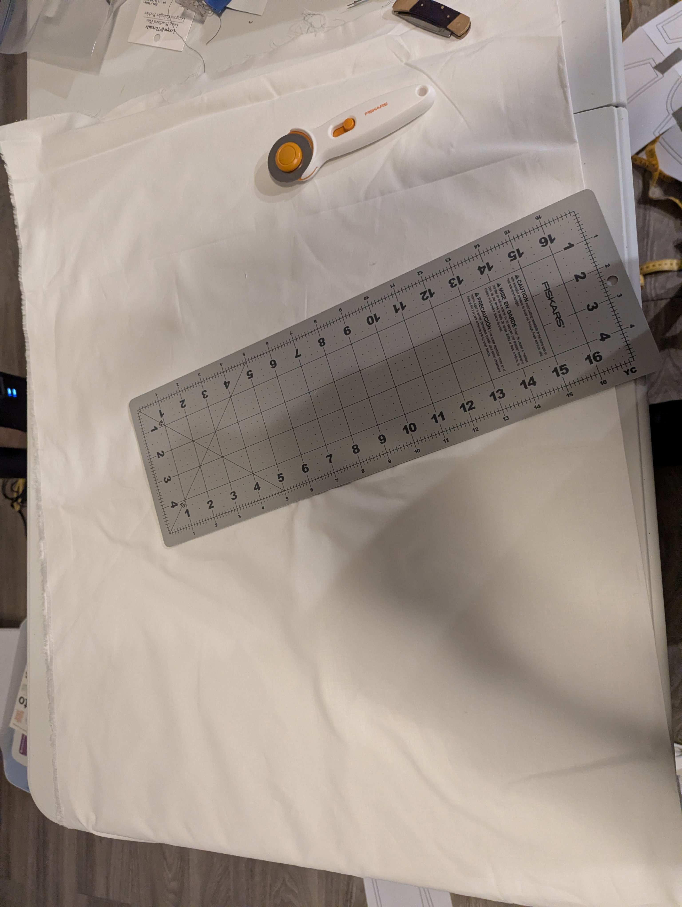
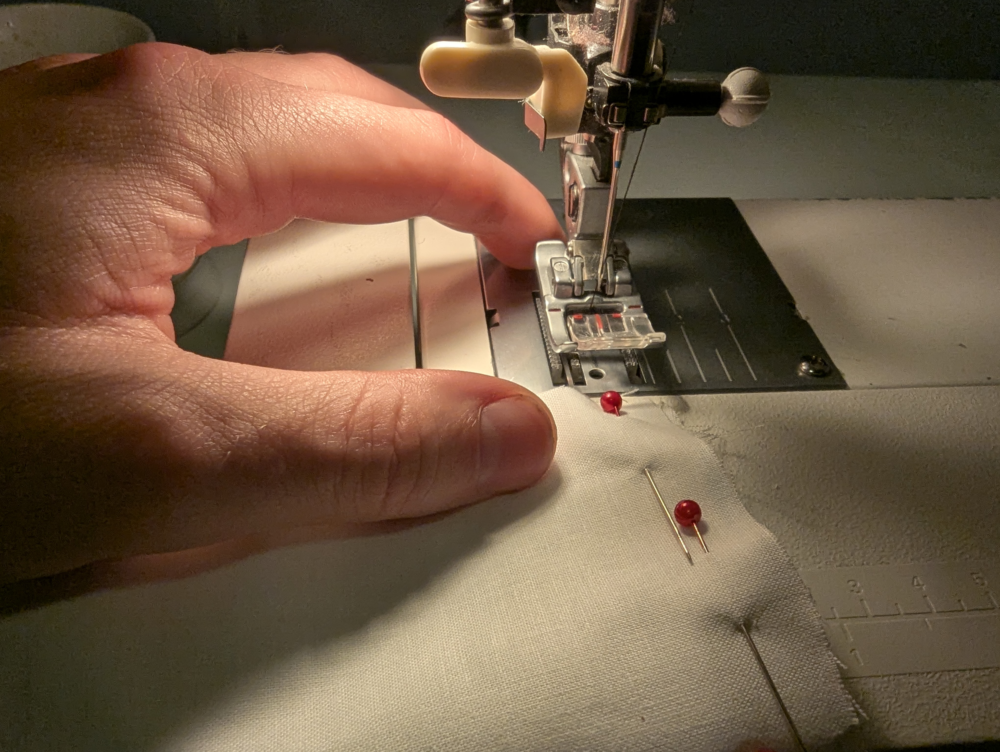
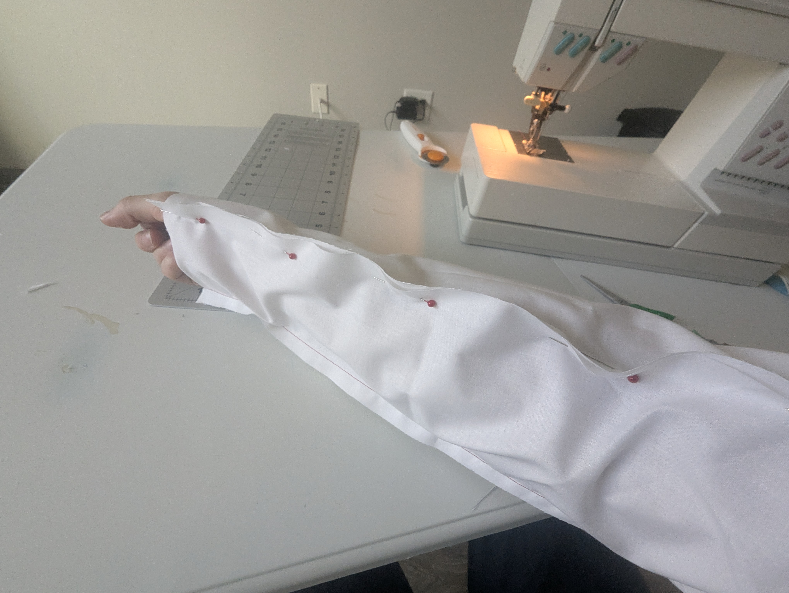
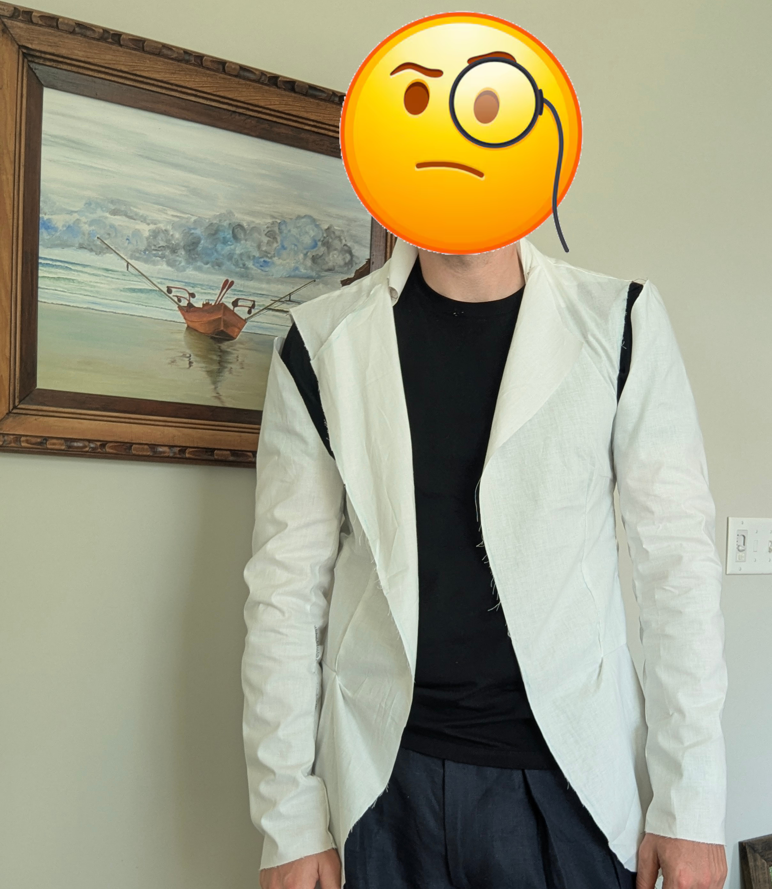
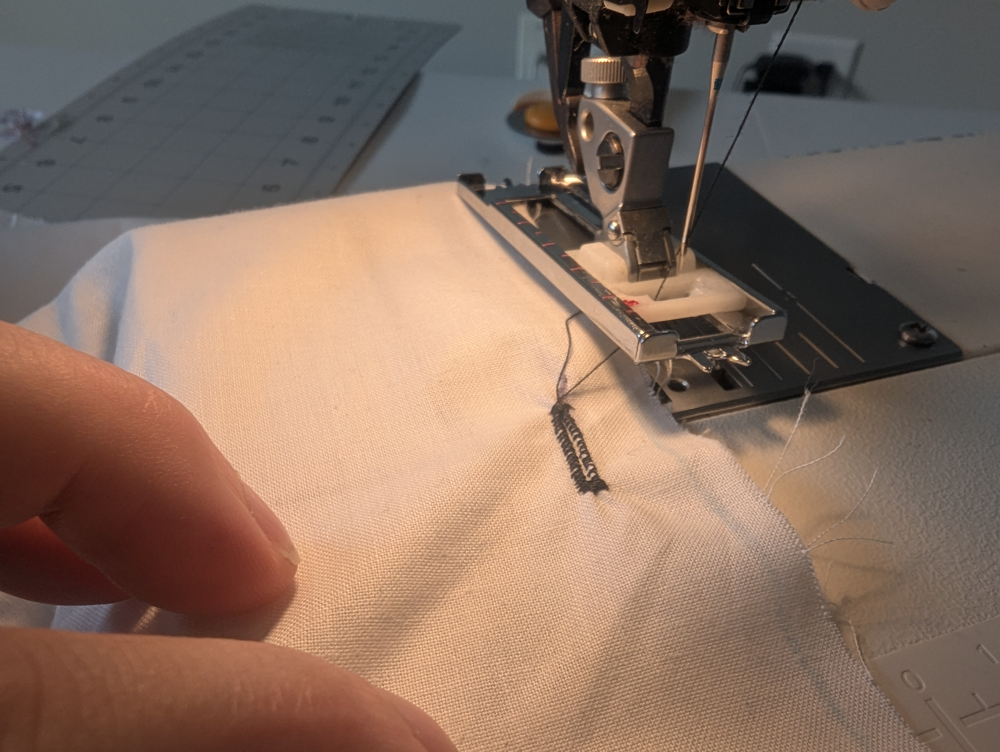
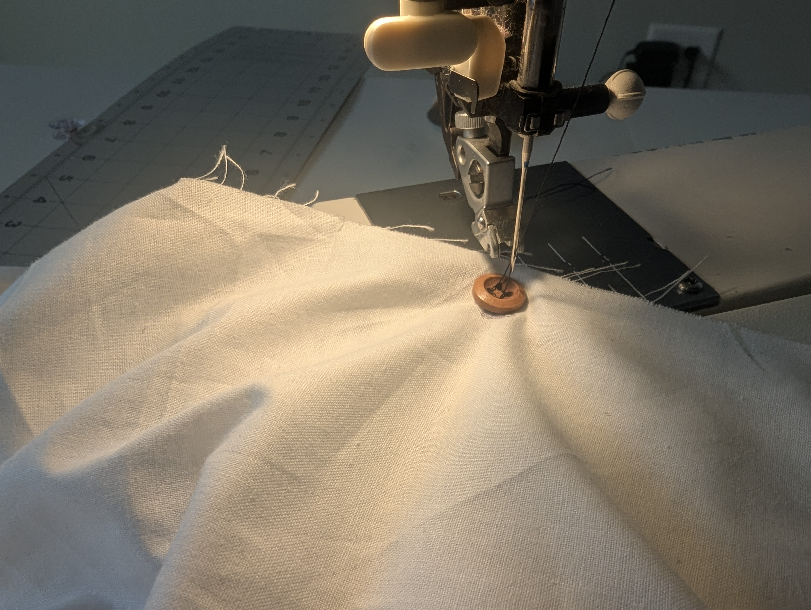

Learning to Sew Part 1
After the sudden and tragic death of Paul Vincent this summer and my brother making his own suit for a 1920s-inspired lawn party I have been inspired to learn sewing to make my own clothes. After much delay, I have finally started this journey and this is the first in what is planned to be a long series of posts documenting my foray into the art.
Long ago, I heard a story about a pottery class where the teacher told the students they could craft as they like. The final grade was to be determined by the last piece they created at the end of the class. Some students made pots everyday while others decided to take more time in crafting each piece. By the end of the class, when students were evaluated by their last piece and the students who had crafted a pot everyday far surpassed those who spent much longer on each pot they had created.
The point of this story is to illustrate my approach to learning sewing. I believe that even if I were to acquire expensive wool right now, say Fox Brothers for example, and I was to meticulously measure, cut, and sew a piece with the idea that it was an expensive fabric I would still fail tremendously. Even with care and attention to detail, I would make many mistakes with no experience. To use another example, when learning to ride a bicycle, one will fall to the ground continually no matter what approach is used, even if they possess an extraordinary sense of balance.
Instead, I will attempt to make as many pieces as possible, focusing on quantity rather than quality. Initially, as in this post, I will use the cheapest fabric possible: muslin. As I make beginner mistakes and improve my skill to a small degree, I will advance to a cheap cotton fabric and, naturally, incrementally improve my personal skills as well as advance the quality (and cost) of the fabric.
In time I hope to be able to craft 100% 350-500 GSM wool fabrics into various styles of jackets and trousers for the winter and 100% 200-350 GSM linen for the summer. I have various other ideas and plans regarding this, but the above goal should be the main focus at this period.
The Result - Rag Jacket V1:

Step 1: Find an old lady
As with any hobby in the modern age, when one ventures into the arena and turns to face the jeering crowd a mishmash of faces held in contorted expressions: pleading, yelling, bargaining with you to “buy MY product”, to “get THIS sewing machine”, or “you MUST get this tool”. All I felt was disgust. Instead, I went to the forest and whistled to the birds. They listened to my tune, and the wind blew them away.
One day, a little birdie came back and whispered in my ear. That is how I was introduced to a generous older lady who was happy to give me her sewing machine, for free, as she no longer used it. Such an event was fortuitous, as now, not only have I made a friend but I also have a mentor to receive advice and tips on the errors I will make. This lady also has many similar interests to mine, such as antiques and rugs. By meeting her (instead of ordering some new expensive machine online), I got many useful tips and recommendations for another hobby.

Step 2: Print and tape pattern together
Now that I have the machine, I needed the fabric, tools, a printer, and a pattern. I got the pattern from my brother: a classic jacket pattern made by a person called “mascultory” on Etsy. Frankly, I have no love for the pattern, but my goal for now is to learn the basics of sewing. I will change the pattern to a more personally pleasing style once my skills improve.
For the fabric and tools, I went to Michaels and bought the cheapest fabric: muslin (a very lightweight fabric). In the store, I had a mindset of buying the fewest tools necessary to make this first jacket. I am new to the hobby, and thought that with such little knowledge it is common for a person to be swindled into acquiring expensive junk. I bought a rotary cutter and small board so I could quickly cut fabric (and hopefully not my finger). Additionally, I bought a cheap variety pack of buttons and a box of pins.
After debugging and fixing the linux drivers for connecting to a printer you can now start your journey. I took a step and fell on my face: messing up the scaling of the pattern to the printer paper. But many sheets later I had a short story and now I was ready to tape it together. Think of the pattern creation as a very easy puzzle. You just align the letters on the corners of each page and tape them together.

Step 3: Cut the fabric (and not your finger) using the pattern ~ 1 hour
I rolled my fabric onto the table, wetted my rotary blade with my tongue and started wheeling and dealing in a way to impress Papa John for a job. Here I made my first incredible mistake. I did not pin or use weight on the pattern while cutting so it moved around alot and with the tiny self healing board under the fabric it was hard to maintain a clean cut. I also did not properly read the instructions for placing patterns with “FOLD” marked on them against a folded portion of fabric. Overall, the cutting portion went quite poorly. I accidently cut some areas marked as seam allowance and there was loose threading everywhere.

Step 4: Sew Front and Back together ~ 1.5 hours
After the fabric was cut out, I moved on to sewing the body (front, sides, and back) of the jacket together. The pattern had multiple details for adding pockets to the bottom front of the jacket and upper left front of the jacket. I decide to skip these as I knew the Rag Jacket would live up to its name by the end of the night. I did cut out and dart the middle front portion and after some time had 3 main pieces (back, right and left front). Then I made another mistake…

When attempting to attach the fronts to the back I first sewed the connection at the top of the shoulders. I connected the Rag Jacket into 1 piece now and then upon looking at it, realized that I had attached them the wrong way. The lesson being: pin it all together to make sure its right before sewing. I brought out the pocket knife and seam ripper to start again…

Now correctly oriented, I decided to slip it on and take a look. It looked ridiculous…

Step 5: Sew Collar ~ 20 minutes
At this point in the instructions I got to the collar. Here I realized that I had not cut the fabric correctly (using the FOLD method) and so, sighing, rolled out the fabric for another try. This time I pinned the pattern to the fabric and was more careful where the self healing board was placed. The cuts were much better than last time, but the pieces were also small (compared to body pieces).
I attached the collar to the body and did a laughable job. I need to review the pattern instructions more carefully for Rag Jacket V2 as my attachment of this collar makes me shudder.

Step 6: Sew Sleeves ~ 25 minutes
With the end in sight I progressed to the sleeves, a much easier task than the other steps. Sewing them together is mostly a series of straight lines. The most important thing to remember is to have to a mirror of sleeves rather than twins. Something to bring up now is that with the fabric I am using here the front and back facing of the fabric is meaningless. For most fabrics there is a “good” side to present and a “bad” side to hide which would make the orientation of all these pieces more important.

I forsaw the attachment of the sleeve to the body to go horribly wrong so I tried on the 3 pieces to imagine the Rag Jacket as it could be instead of the monster I knew it would become.

Step 7: Attach Sleeves ~ 30 minutes
It took me several minutes of pulling the sleeve inside out and then rightside and pinning it to body before I understood how to even sew the sleeve to the body while hiding the stitch. I aligned the top of the sleeve to the top of the shoulder, pinned, and left the rest to fate.
There was a large amount of extra fabric from the sleeve near the top of the shoulder that I have heard you are supposed to hand sew and then when you release the handstitch, after machine stitching, the fabric will have room to breath and be clean.
But I had no individual needle, just my machine, so I threw caution to the wind and pressed my foot to the pedal. Here is the hilarious result:

Step 8: Buttons and other details ~ 1 hour
After trying on the Rag Jacket and laughing at myself, I decided to try to clean it up and get some experience adding buttons. After perusing the sewing marchine manual, reading and rereading the tiny text and strange diagrams, I tried many times to sew a buttonhole on some scrap fabric. Eventually I had a ghost of a buttonhole and decide it was time to try on the real thing. Unfortunately, I seriously underestimated the size of the buttonhole and while at first I had some satisfication that I created something that resembled a buttonhole, I quickly realized it was quite small. The Rag Jacket was looking to be a tight jacket with shoulder fluff all held together by a tiny button.

As I searched for the smallest button, I was unsure how to connect the button to the jacket as I had no individual needle and no idea how to use the machine to programmatically sew the tiniest of buttons to my Rag Jacket. Instead I positioned the jacket and button under the sewing machine’s needle and turned the wheel by hand. As a result the button is there but barely. I sewed some of the edges of the jacket to hide the frays and decided to call it a day.

Lessons
- Always use pins or clips. For the pattern cutting or sewing pieces together
- Cut the fabric on an even surface and try using shears rather than the rotary cutter
- Get and use an iron to press fabric together
- Make larger buttonholes
- Get an individual needle to handstitch sleeve to body
Overall the result of Rag Jacket V1 is bad. It looks ridiculous but I learned a lot. I hope to improve and release Rag Jacket V2 soon….
The Result (Again)